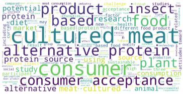
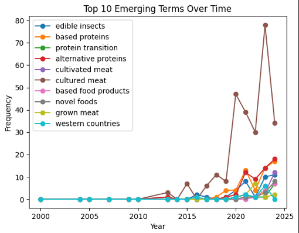
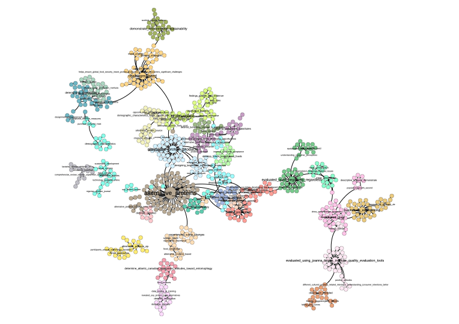

# Packages to install
!pip install nltk
!pip install stanza
!pip install pandas
!pip install phrasemachine
!pip install rake-nltk
!pip install numpy==1.24
# we need to install an older version of numpy because otherwise
# we will have a clash with other packages
!pip install wordcloud
!pip install matplotlib
!pip install scikit-learn
!pip install igraph
!pip install cairocffi
!pip install pycairoSession 1: Tutorial
1.1 Installing the required packages.
For this first tutorial we will learn how to apply specific tasks in NLP. We won’t use each of these tasks in each session, we will therefore start with creating a new anaconda envirnment for this session. The main reason is that we need a specific version of the numpy package. This version will conflict with other packages required later on, so we really need a seperate environment.
Once the environment has been created, we install the packages we need:
The we load the packages:
# load the packages
import nltk
from nltk.corpus import wordnet # These are sub-modules that need to be loaded separetely",
from nltk.stem import WordNetLemmatizer
from nltk.corpus import stopwords
from nltk import pos_tag, word_tokenize
from nltk.chunk import RegexpParser
from nltk.stem import PorterStemmer
from collections import Counter
import pandas as pd
import math
import stanza1.2 Dowloading some models:
Explanation of NLTK Downloads
nltk.download('punkt')- Downloads the Punkt tokenizer models.
- These are pre-trained sentence and word tokenization models that can split text into sentences and words.
- Example usage:
nltk.tokenize.word_tokenizeandnltk.tokenize.sent_tokenize.
- Downloads the Punkt tokenizer models.
nltk.download('averaged_perceptron_tagger')&nltk.download('averaged_perceptron_tagger_eng')- Downloads the Averaged Perceptron Tagger model.
- This is used for Part-of-Speech (POS) tagging, assigning word types (e.g., noun, verb, adjective) to each word in a sentence.
- Downloads the Averaged Perceptron Tagger model.
nltk.download('stopwords')- Downloads a list of stopwords for various languages.
- Stopwords are common words like “the,” “and,” or “is” that are often filtered out in text processing because they carry less semantic meaning.
- Downloads a list of stopwords for various languages.
nltk.download('wordnet')- Downloads the WordNet database.
- WordNet is a large lexical database of English, providing synonyms, antonyms, and hierarchical relationships between words.
- Downloads the WordNet database.
nltk.download('omw-1.4')- Downloads the Open Multilingual WordNet 1.4 dataset.
- This extends WordNet with translations and multilingual support for lexical relationships.
- Downloads the Open Multilingual WordNet 1.4 dataset.
# We need to download some models (only required once)
nltk.download('punkt') # model that splits text at punctuation
nltk.download('averaged_perceptron_tagger') # POS tagger
nltk.download('averaged_perceptron_tagger_eng')
nltk.download('stopwords') # stopword removal
nltk.download('punkt_tab') # split at tab
nltk.download('wordnet') # contains english dictionary for lemmatisation
nltk.download('omw-1.4') # same as wordnet1.3 Create a sample text to work with
To test out the different functions, we will use sample text before working on a lager dataset. Let’s create an object called “text_object” that will contain the abstract of a patent on seawater desalination.
# let's create a sample text to work on:
text_object = "Provided is a separation membrane for seawater desalination and a method for manufacturing the same, and more particularly, a separation membrane for seawater desalination with excellent water permeability and salt rejection and a method for manufacturing the same. If the separation membrane for seawater desalination and the method for manufacturing the same according to the present disclosure are applied, it is possible to provide a separation membrane for seawater desalination with excellent water permeability and salt rejection. Therefore, it is possible to provide a separation membrane for seawater desalination with improved performance in comparison to an existing separation membrane for seawater desalination. As a result, water resources may be widely utilized."1.4 Stopword removal
# We start by creating a set of stopwords. The stopwords function comes from the nltk package
# we dowloaded the set with the nltk.download('stopwords') previously.
stop_words = set(stopwords.words('english'))
# To remove the stopwords, we first need to tokenize the text (i.e splitting it up) and then remove the words
text_object_nostopwords = ' '.join([word for word in word_tokenize(text_object) if word.lower() not in stop_words])
# check the new text:
text_object_nostopwordsA lot is happening in this code, let’s split it up:
word_tokenize(text_object): This code splits the text up into tokens (words). We can then check if any of these words are in the list of stopwords. If they are we remove them.
[word for word in word_tokenize(text_object) if word.lower() not in stop_words]: This is a loop. For each word that was created by tokenizing the text, we remove any capital letters (word.lower()) and if it’s not in the stop_words, then we join it back to the initial text.
’ ’.join: the words that are not in the stopword list are pasted back together into a single string. The tokens are separated by a ” “.
The output of this script is a text from which the stopwords have been removed.
1.5 Words you want to remove
Often there are words that we want to remove from the text after our first analysis. This can be because there are copyright statements we want to remove, name of the publisher (springer, elsevier), or any other word that is influencing the quality of the analysis:
# We start by creating a list of words to remove from the text
words_to_remove = {"particularly", "Therefore", "result"}
# To remove the words, we use the same code as before, but we replace the object:
filtered_text = " ".join([word for word in text_object_nostopwords.split() if word.lower() not in words_to_remove])
print(filtered_text)1.6 Stemming
When working with text in a bag-of-words approach (i.e no semantic models are used, we only count frequencies), it can be important to harmonise the text as much as possible. We can do this with the use of a Stemmer which reduces the form of the words to their root.
# Initialize the stemmer
stemmer = PorterStemmer()
# we tokenise the text so that the stemmer has specific words to work with.
tokens = word_tokenize(text_object)
# we then stem each word in the tokens
stemmed_text = [stemmer.stem(word) for word in tokens]
# And we print it out
print(stemmed_text)1.7 Lemmatisation
Let’s use a more sophisticated approach. Instead of reducing the words to their roots, we will reduce them to a reference term from the dictionary:
# Let's use a Sample text for this exercisee
example_text = ["Desalinates", "Desalinating", "Desalinated", "Desalinator", "Desalination"]
example_text = [word.lower() for word in example_text] # Convert to lowercase
# Initialize lemmatizer
lemmatizer = WordNetLemmatizer()
# Function to convert NLTK POS tags to WordNet POS tags
def get_wordnet_pos(nltk_pos_tag):
if nltk_pos_tag.startswith('J'):
return wordnet.ADJ
elif nltk_pos_tag.startswith('V'):
return wordnet.VERB
elif nltk_pos_tag.startswith('N'):
return wordnet.NOUN
elif nltk_pos_tag.startswith('R'):
return wordnet.ADV
else:
return wordnet.NOUN # Default to noun if no tag matches
# Apply POS tagging
pos_tags = pos_tag(example_text)
# Lemmatize each word with the correct POS tag
lemmatized_text = [lemmatizer.lemmatize(word, get_wordnet_pos(pos)) for word, pos in pos_tags]
lemmatized_textLet’s see how this works on our sample text:
# applied to our sample text:
example_text = word_tokenize(text_object)
example_text = [word.lower() for word in example_text] # Convert to lowercase
# Initialize lemmatizer
lemmatizer = WordNetLemmatizer()
# Function to convert NLTK POS tags to WordNet POS tags
def get_wordnet_pos(nltk_pos_tag):
if nltk_pos_tag.startswith('J'):
return wordnet.ADJ
elif nltk_pos_tag.startswith('V'):
return wordnet.VERB
elif nltk_pos_tag.startswith('N'):
return wordnet.NOUN
elif nltk_pos_tag.startswith('R'):
return wordnet.ADV
else:
return wordnet.NOUN # Default to noun if no tag matches
# Apply POS tagging
pos_tags = pos_tag(example_text)
# Lemmatize each word with the correct POS tag
lemmatized_text = [lemmatizer.lemmatize(word, get_wordnet_pos(pos)) for word, pos in pos_tags]
lemmatized_text1.8 Part-of-Speech Tagging:
Part of speech tagging is a method that allows us to identify specific types of words in a text. When we are interested in actions we can focus on verbs, when we are interested in technologies, we can focus more on nouns. Or a combination of both. POS tagging is a method that allows us to search for specific patterns inside a text.
# Tokenize and POS tag the text
tokens = word_tokenize(text_object)
pos_tags = pos_tag(tokens)
# Define a chunk grammar to capture noun phrases
grammar = "NP: {<DT>?<JJ>*<NN|NNS>+}" # Noun Phrase pattern
# Create a chunk parser
Chunk_parser = RegexpParser(grammar)
# Parse the tagged words
tree = Chunk_parser.parse(pos_tags)
# Extract noun phrases
noun_phrases = []
for subtree in tree.subtrees(filter=lambda t: t.label() == 'NP'):
noun_phrases.append(" ".join([word for word, pos in subtree.leaves()]))
print(noun_phrases)1.9 Word weighing
Identifying words that are more important than others can be done by computing indicators such as TF-IDF, c-TF-IDF, c-value etc.
import nltk
from nltk import pos_tag, word_tokenize
from nltk.chunk import RegexpParser
from collections import Counter
import math
# Sample text
text = text_object
# Tokenize and POS tag
tokens = word_tokenize(text.lower())
pos_tags = pos_tag(tokens)
# Define chunk grammar for noun phrases
grammar = r"NP: {<JJ>*<NN>+}" # e.g., "separation membrane"
chunker = RegexpParser(grammar)
tree = chunker.parse(pos_tags)
# Extract noun phrases
noun_phrases = []
for subtree in tree.subtrees(filter=lambda t: t.label() == 'NP'):
noun_phrases.append(" ".join([word for word, tag in subtree.leaves()]))
# Count frequency of phrases
phrase_freq = Counter(noun_phrases)
# Compute C-Value for each phrase
c_values = {}
for phrase, freq in phrase_freq.items():
nested_phrases = [p for p in phrase_freq if p != phrase and phrase in p]
nested_freq = sum(phrase_freq[nested] for nested in nested_phrases)
nested_count = len(nested_phrases)
log_len = math.log2(len(phrase.split()))
c_values[phrase] = log_len * (freq - (nested_freq / nested_count if nested_count > 0 else 0))
# Sort phrases by C-Value
sorted_c_values = sorted(c_values.items(), key=lambda x: x[1], reverse=True)
for phrase, score in sorted_c_values:
print(f"{phrase}: {score}")2.0 Easy solutions with RAKE
Rake is package that has streamlined a big part of the process to extract noun phrases, making it easy to get results:
rom rake_nltk import Rake
import pandas as pd
# Initialize RAKE (Rapid Automatic Keyword Extraction)
rake = Rake()
rake.extract_keywords_from_text(text_object) # Extract key phrases
phrases_with_scores = rake.get_ranked_phrases_with_scores() # let's add some scores
df = pd.DataFrame(phrases_with_scores, columns=["Score", "Phrase"]) # make it into a df
df.drop_duplicates() # and remove duplicatesThe score for each phrase represents its importance, calculated as:
\(Phrase_{score} = \sum_{words} Word_{score}\)
Each \(Word_score\) is computed by:
\(word_{score} =. \frac{Degree of the word}{Frequency of the word}\) where the degree is the number of other words the word co-occurs with in phrases, and frequency the count of how many times the word appears in the text.
2.1 Let’s visualise
# Visualisation
from wordcloud import WordCloud
import matplotlib.pyplot as plt
# Prepare data for the word cloud: a dictionary of phrases and scores
word_freq = dict(zip(df["Phrase"], df["Score"]))
# Create the word cloud
wordcloud = WordCloud(width=800, height=400, background_color="white").generate_from_frequencies(word_freq)
# Display the word cloud
plt.figure(figsize=(10, 5))
plt.imshow(wordcloud, interpolation="bilinear")
plt.axis("off")
plt.show()3.1 Larger dataset:
Let’s make this more interesting. Download the dataset from blackboard and load it into python:
documents = pd.read_csv("DAFS_NLP_Lectures_2024/Scopus_protein_transition.csv", sep = ",")
documents = documents[['Abstract', 'Year']]
documents = documents.iloc[1:600,:]
documents = documents[documents["Year"] != 2025]Let’s make a wordcloud for the corpus:
import string
from wordcloud import WordCloud
df = pd.DataFrame(documents)
# Custom stop words that i want to remove. These were identified by running this script a first time
# based on the results i saw words i don't want, added them here so they can be removed
custom_stop_words = {"0", "online survey", "results show", "recent years", "exclusive licence", "crucial role", "based diets", "based meat"}
# Function to preprocess text: remove stop words and punctuation
def preprocess_text(text):
text = text.lower() # Convert to lowercase
for stop_phrase in custom_stop_words:
text = text.replace(stop_phrase.lower(), "") # Remove stop phrases
words = text.split() # Tokenize text
return " ".join(word.strip(string.punctuation) for word in words if word.strip(string.punctuation))
# Function to extract multi-word phrases using RAKE
def extract_key_phrases(text):
rake = Rake() # Initialize RAKE
rake.extract_keywords_from_text(text) # Extract keywords/phrases
phrases = rake.get_ranked_phrases() # Get the ranked phrases
# Filter out monograms (single-word phrases)
return [phrase for phrase in phrases if len(phrase.split()) > 1]
# Preprocess abstracts and extract key phrases
df["Cleaned_Abstract"] = df["Abstract"].apply(preprocess_text)
df["Noun_Phrases"] = df["Cleaned_Abstract"].apply(extract_key_phrases)
# Flatten the lists of noun phrases into a single sequence of strings
all_phrases = " ".join(phrase for phrases in df["Noun_Phrases"] for phrase in phrases)
# Generate the word cloud
wordcloud = WordCloud(width=800, height=400, background_color='white').generate(all_phrases)
# Display the word cloud
import matplotlib.pyplot as plt
plt.figure(figsize=(10, 5))
plt.imshow(wordcloud, interpolation="bilinear")
plt.axis("off")
plt.show()
3.2 Term emergence:
An interesting application is to measure which terms are emerging (i.e which terms are being new and discussed with frequency).
# let's look at the emergence of terms
# we want to see which terms emerge over time in the discussion about the protein transition
import pandas as pd
from rake_nltk import Rake
import matplotlib.pyplot as plt
import string
# Load NLTK resources
import nltk
# load the data in a dataframe
df = pd.DataFrame(documents)
# Custom stop words (add domain-specific or undesired words)
custom_stop_words = {"0", "online survey", "results show", "recent years", "exclusive licence", "crucial role", "based diets", "based meat"}
# Function to preprocess text: remove stop words and punctuation
def preprocess_text(text):
text = text.lower() # Convert to lowercase
for stop_phrase in custom_stop_words:
text = text.replace(stop_phrase.lower(), "") # Remove stop phrases
words = text.split() # Tokenize text
return " ".join(word.strip(string.punctuation) for word in words if word.strip(string.punctuation))
# Function to extract multi-word phrases using RAKE
def extract_key_phrases(text):
rake = Rake() # Initialize RAKE
rake.extract_keywords_from_text(text) # Extract keywords/phrases
phrases = rake.get_ranked_phrases() # Get the ranked phrases
# Filter out monograms (single-word phrases)
return [phrase for phrase in phrases if len(phrase.split()) > 1]
# Preprocess abstracts and extract key phrases
df["Cleaned_Abstract"] = df["Abstract"].apply(preprocess_text)
df["Noun_Phrases"] = df["Cleaned_Abstract"].apply(extract_key_phrases)
# we need to know when a noun phrase was written. We need a df with two
# columns, a first with the year and a second with the phrase
# this way we can then compute how many times a noun phrase was written in each year
# Create a new dataframe with one row per noun phrase and year
expanded_data = []
for _, row in df.iterrows(): # we loop over the rows of the df
year = row["Year"] # we set the year to the observed value
for phrase in row["Noun_Phrases"]: # we loop over the phrases
expanded_data.append({"Year": year, "Noun_Phrase": phrase}) # we add the years next to the phrase
# make sure this is a dataframe
noun_phrase_df = pd.DataFrame(expanded_data)
# Count frequency of each noun phrase per year
freq_per_year = noun_phrase_df.groupby(["Year", "Noun_Phrase"]).size().reset_index(name="Frequency")
# Pivot to get years as columns for growth rate calculation
pivot_table = freq_per_year.pivot(index="Noun_Phrase", columns="Year", values="Frequency").fillna(0)
# Compute growth rate (percentage change) between consecutive years
growth_rates = pivot_table.pct_change(axis=1).fillna(0)
growth_rates.replace([float('inf'), -float('inf')], 0, inplace=True)
# Identify the top 3 terms with the highest average growth rate
avg_growth_rate = growth_rates.mean(axis=1).sort_values(ascending=False)
top_10_terms = avg_growth_rate.head(10).index
# Plot the frequency of the top 3 terms over time
for term in top_10_terms:
plt.plot(pivot_table.columns, pivot_table.loc[term], marker="o", label=term)
plt.title("Top 10 Emerging Terms Over Time")
plt.xlabel("Year")
plt.ylabel("Frequency")
plt.legend()
plt.show()
# Display top 3 emerging terms and their growth rates
print("Top 10 Emerging Terms and Their Growth Rates:")
print(avg_growth_rate.head(3))
3.3 Themes and networks:
Words are written in a context, a wordcloud, or even looking at the emergence of terms neglects this context. In the bag-of-word approaches, one method to include context in the analysis is to create networks. The idea is to create a link between words that often appear together in the same unit of analysis. Whenever two extracted tokens are present in the same unit (document, sentence, paragraph) a link is created between the words. The wight of this link can then be the frequence of co-occurrence for example. Other types of values exist for this (\(\chi^2\), Cramer, mutual information), see https://jpvdp.github.io/NetworkIsLife/Text_networks.html for more information (this is not part of the course DAFS).
A script has been prepared for you to create a network between terms. Keep in mind that there are many ways of creating these networks, this is one of the simler approaches.:
# Since everything is crap, I make my own function to make a network
# V43.2
import re # some string manipulation
from rake_nltk import Rake # noun phrase extraction
from sklearn.feature_extraction.text import CountVectorizer
import igraph # package for network creation, analysis and visualisation
words_to_remove = ["using vos viewer", "also revealed","dx","doi","Background: ","rights reserved","elsevier inc","du","Jiang","0", "online survey", "results show", "recent years", "exclusive licence", "crucial role", "based diets", "based meat","et al", "results show"]
# we start by creating a function that cleans the text and extracts the tokens. Having a function at our disposal
# makes it easier to apply it to all the documents.
def extract_cleaned_multi_terms(text):
# Create a regex pattern to match whole words in the list
# this ensures that our words are removed in their entirety from the text
# if the word is part of another word, it will not be removed
pattern = r'\b(' + '|'.join(map(re.escape, words_to_remove)) + r')\b'
text = re.sub(pattern, '', text, flags=re.IGNORECASE) # function removes words based on the regex pattern
text = text.replace(';', ' ') # these functions replace a specific character with a space
text = text.replace(',', ' ')
text = text.replace('+', '')
text = text.replace('-', '')
text = text.replace('≥', '')
text = re.sub(r"\d+", "", text) # remove numbers
# Remove all special characters
cleaned_text = re.sub(r"[^\w\s]", "", text)
# Initialize RAKE for the extraction of the noun-phrases
rake = Rake()
# Extract phrases using RAKE
rake.extract_keywords_from_text(cleaned_text)
phrases = rake.get_ranked_phrases()
# Remove leading and trailing spaces: It can happen that we have created extra spaces when removing
# words and characters, we need to remove them
# the following loops over the phrases and removes the spaces from each noun phrase
cleaned_phrases = [phrase.strip() for phrase in phrases]
# For the purpose of this exercise, we want to remove monograms (single-word terms)
# we do this here by counting the spaces in the multiterm. If there are more than one
# then the word is a multiterm so we keep it.
multi_word_phrases = [phrase for phrase in cleaned_phrases if len(phrase.split()) > 1]
# we replace the spaces with a _ so that they become one string
multi_word_phrases = [item.replace(" ", "_") for item in multi_word_phrases]
# we return the list of multiwords
return multi_word_phrases
# extract the noun phrases: we apply the function to extract the phrases
documents['noun_phrases'] = documents['Abstract'].apply(extract_cleaned_multi_terms)
documents['noun_phrases'] = documents['noun_phrases'].apply(lambda phrases: " ".join(phrases))
# Create the Document-Term Matrix
# This matrix has a row per document and each column is a word
vectorizer = CountVectorizer(token_pattern = r"\S+")
dtm = vectorizer.fit_transform(documents['noun_phrases'])
# Compute the Co-occurrence Matrix
# Multiply DTM by its transpose to get term-term co-occurrence
cooccurrence_matrix = (dtm.T @ dtm).toarray()
# Get the term names
terms = vectorizer.get_feature_names_out()
#Create a DataFrame for better readability
cooccurrence_df = pd.DataFrame(cooccurrence_matrix, index=terms, columns=terms)
adjacency_matrix = cooccurrence_df.values.tolist()At the end of this script we will have an adjacency matrix. This is a matrix that has phrases on each row and phrases on each column. A value > 0 indicates a co-occurrence between the phrases. 0 means the phases do not occur in the same document.
Now that we have the matrix, we can start making the network. We will use the igraph package for this.
# Create a weighted graph from the adjacency matrix
# version where we manually set the weights
g = igraph.Graph.Weighted_Adjacency(
adjacency_matrix,
mode=igraph.ADJ_UNDIRECTED, # Use ig.ADJ_DIRECTED for directed graphs
attr="weight"
)
# Assign weights to edges
g.es["weight"] = [
adjacency_matrix[i][j] for i in range(len(adjacency_matrix))
for j in range(len(adjacency_matrix[i])) if adjacency_matrix[i][j] != 0
]
# Assign names to the nodes (terms)
g.vs["name"] = cooccurrence_df.columns.tolist()
# !!!!!!!!! Here we filter !!!!!!!!!
# //////// Adjust parameter here \\\\\\\\\\
threshold = 4 # Set your desired threshold here
# \\\\\\\\ Adjust parameter here //////////
edges_to_delete = [e.index for e in g.es if e["weight"] < threshold]
g.delete_edges(edges_to_delete)
g = g.clusters().giant()
# Plot the graph
from igraph import plot
betweenness = g.betweenness()
#
node_sizes = [5 + (b / max(betweenness) * 30) if max(betweenness) > 0 else 10 for b in betweenness]
g.vs["label_size"] = [c for c in node_sizes] # Base size + degree
g.vs["label"] = g.vs["name"]And finally we visualise the network:
plot(
g, # g is the network
layout=g.layout("kk"), # this defines how the nodes are positionned
vertex_size=node_sizes, # size of the nodes
vertex_color="yellow", # color of the nodes
edge_width=2, # how thick the links
bbox=(1000, 1000), # Set size of the plot
margin=20,
vertex_label_size=g.vs["label_size"]
)
In a network we can see how terms are positioned relatif to each other. We see groups of terms that form themes.